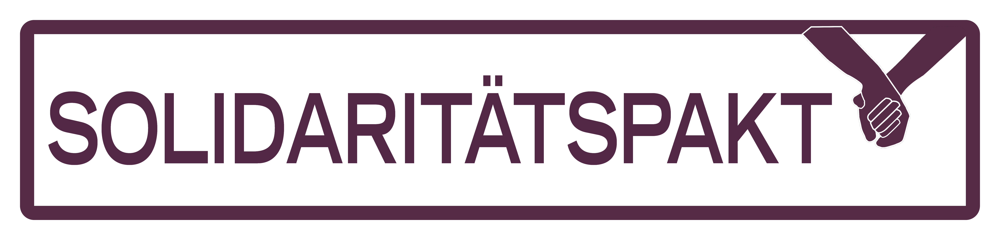

Angesichts bedrohlicher Entwicklungen für die Demokratie in Österreich schließen die unterzeichnenden Organisationen einen Solidaritätspakt für den Schutz und Ausbau von zivilgesellschaftlichen Handlungsspielräumen, sozialer Sicherheit und Demokratie ab. Wir verpflichten uns gemeinsam ‒ so wie bisher ‒ unsere Stimme zu erheben und uns für den Erhalt und den Ausbau grundlegender Rechte sowie der rechtlichen, wirtschaftlichen und sozialen Rahmenbedingungen für zivilgesellschaftliches und gewerkschaftliches Handeln und Demokratie einzusetzen. Sollten einzelne Bevölkerungsgruppen oder Organisationen staatlicher Repression ausgesetzt werden, werden wir gemeinsam und solidarisch Beistand leisten und aktiv werden.
Ohne eine lebendige und starke Zivilgesellschaft wäre es um Umweltschutz, Menschenrechte, Arbeitnehmer_innenrechte, soziale Gerechtigkeit, Gleichberechtigung und vieles mehr in Österreich schlecht bestellt. Ohne eine aktive und von Hunderttausenden unterstützte Zivilgesellschaft würden heute in Österreich Atomkraftwerke stehen, schutzsuchende Menschen müssten auf der Straße leben, das Versammlungsrecht wäre massiv eingeschränkt, eine Reihe von Rechten und Gleichstellungsmaßnahmen für Frauen gäbe es noch immer nicht, es gäbe keine starke Interessenvertretung der Arbeitnehmer_innen, keine innerbetriebliche Demokratie, keinen Antidiskriminierungsschutz. Und ohne die Möglichkeit wirksam und organisiert aktiv zu werden, würden Bürger_innen in vielen Fällen Unrecht, Umweltzerstörung, Ungleichbehandlung und Diskriminierung machtlos gegenüberstehen.
Gewerkschaften und die Zivilgesellschaft haben wesentlich dazu beigetragen, Österreich in einem hohen Maß lebenswert zu machen und die hier lebenden Menschen mit Freiheiten, Rechten und der Möglichkeit eines selbstbestimmten Lebens auszustatten. Doch all das steht immer öfter auf dem Spiel: In Teilen Europas breitet sich ein zunehmender Druck auf soziale Bewegungen, auf Freiheiten und soziale und ökologische Errungenschaften aus. Immer öfter setzen Regierungen Maßnahmen, die zivilgesellschaftliches Engagement einschränken. Immer öfter werden aktive Bürger_innen eingeschüchtert und bedroht. Auch in Österreich findet diese Entwicklung statt. In den vergangenen Monaten gab es vielfach Angriffe auf zentrale demokratische Freiheiten, Grundrechte, den Rechtsstaat, Arbeitnehmer_innenrechte und soziale Sicherheit.
Zu diesen Angriffen zählen u. a:
- Einschränkungen der Versammlungs- und Meinungsfreiheit, offline und online.
- Abbau von rechtsstaatlichen Garantien, Grund- und Menschenrechten sowie Konventionen.
- Einengung der politischen Freiräume durch repressive Maßnahmen gegen zivilgesellschaftliches Engagement, sei es durch die Verschärfung von Überwachungsmaßnahmen, die Diskreditierung von NGOs oder die Drohung Förderungen zu entziehen.
- Kriminalisierung von politischer Aktivität und legitimen Formen des Protests.
- Angriffe auf die demokratisch legitimierten Interessenvertretungen der Arbeitnehmer_innen und die innerbetriebliche Mitbestimmung.
- Politische Einflussnahme auf die unabhängige Justiz, Angriffe auf und Anzeigen von Richter_innen.
- Der Versuch, bei unliebsamen Gerichtsentscheidungen die Verfassung zu ändern, um andere politisch gewollte Ergebnisse herbeizuführen.
- Abbau von Arbeitnehmer_innenrechten und Angriffe auf den Sozialstaat.
- Gesellschaftliche Spaltung durch das Schüren von Vorurteilen und das Verunglimpfen von zivilgesellschaftlichem Engagement.
Wir gehen davon aus, dass diese Angriffe auch in Zukunft fortgesetzt werden. In vielen Ländern innerhalb und außerhalb der EU greifen Regierungen zu ähnlichen Maßnahmen, um neoliberale Politik weiter durchzusetzen, die auf immer breiteren Widerstand der Bevölkerung trifft.
In einer funktionierenden Demokratie hat der Staat die Verpflichtung die Grundrechte der gesamten Bevölkerung zu schützen und demokratische Freiräume zu garantieren. Diese Freiräume und eine aktive und starke Zivilgesellschaft sind mehr denn je notwendig, um solidarische und emanzipatorische Antworten auf die gegenwärtigen Krisen zu entwickeln ‒ von der zunehmenden sozialen Ungleichheit über die Umwelt- und Klimakrise und zunehmend prekären Arbeitsverhältnissen bis hin zur Notwendigkeit der Weiterentwicklung unserer Demokratie. Wir stehen für diese solidarischen und emanzipatorischen Antworten und Alternativen, die wir mit den vielfältigen Formen des zivilgesellschaftlichen Engagements einbringen und vorantreiben.
Den Solidaritätspakt unterzeichnen
Initiator*innen

Unterzeichner*innen
- #aufstehn – Verein zur Förderung zivilgesellschaftlicher Partizipation
- AGORA – Verein Arbeitsgemeinschaft offenes Radio
- Aktion 21 - pro Bürgerbeteiligung
- Aktive Arbeitslose Österreich
- AUGE/UG
- entschleunigung und orientierung - institut für alterskompetenzen
- EVAL
- FIAN Österreich
- Flucht nach Vorn
- Freies Radio B138
- Freies Radio Innsbruck FREIRAD
- Gewerkschaft der Privatangestellten, Druck, Journalismus, Papier
- Gewerkschaft PRO-GE
- IG Milch
- Katholische Frauenbewegung Österreichs
- knack:punkt - Selbstbestimmt Leben Salzburg
- Kulturplattform Oberösterreich
- LEFÖ - Beratung, Bildung und Begleitung für Migrantinnen
- Mauthausen Komitee Österreich
- mehr demokratie!
- murXkraftwerk
- NeSoVe Netzwerk Soziale Verantwortung
- OBRA - One Billion Rising Austria
- Radio Helsinki - Freies Radio Graz
- Radio Orange 94.0
- Selbstbestimmt Leben Österreich (SLIÖ)
- SOL - Menschen für Solidarität, Ökologie und Lebensstil
- System Change, not Climate Change!
- Theater der Unterdrückten Wien
- transform!at
- UNDOK – Verband zur gewerkschaftlichen Unterstützung undokumentiert Arbeitender
- Verein Gegen Tierfabriken
- WWF Österreich